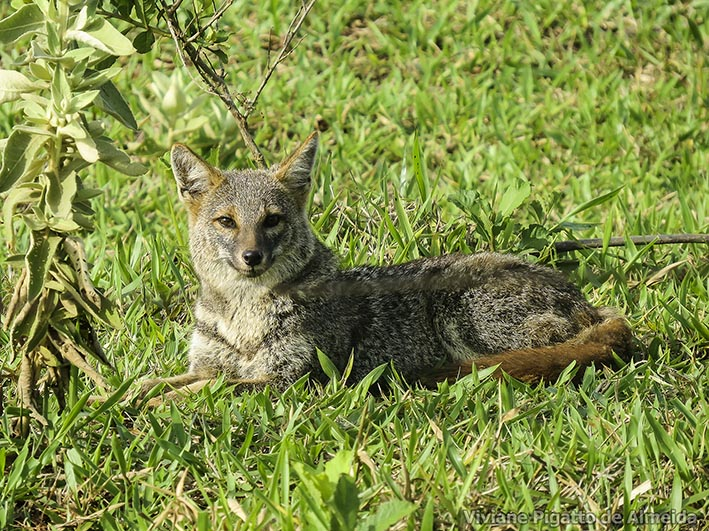
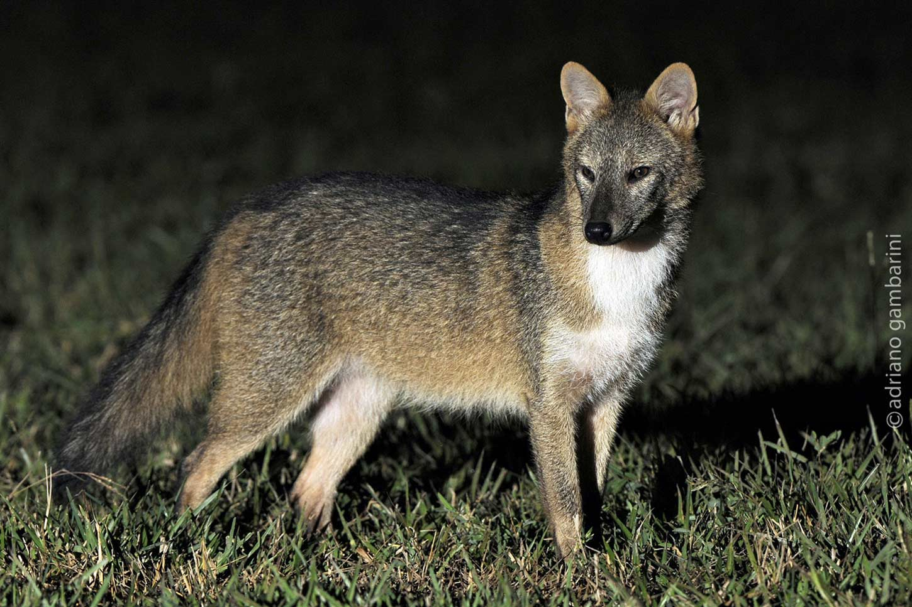

2 especies de raposas.
Existem dezenas de raposas espalhadas pelo mundo, divididas entre Verdadeiras(gênero Vulpes) e outras espécies de 1 carnídeos sul-americanos
Raposa-do-campo(Lycalopex vetulus)

A raposa-do-campo (Lycalopex vetulus) é a única espécie de canídeo estritamente endêmica do Brasil, encontrada principalmente no bioma Cerrado, além de áreas do Pantanal e da Caatinga
Graxaim-do-mato (Cerdocyon thous)

Graxaim-do-mato (Cerdocyon thous), também conhecido como cachorro-do-mato ou raposa, é um pequeno canídeo silvestre nativo da América do Sul e muito comum em grande parte do território brasileiro.